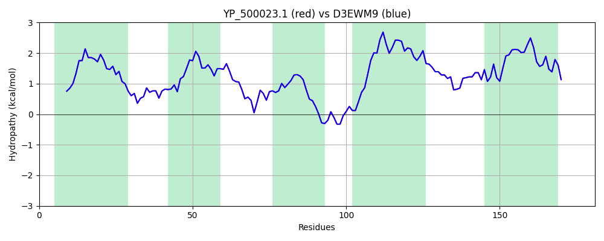

Hit Accession: D3EWM9
Hit TCID: 2.A.87.1.3
Hit Description: gnl|BL_ORD_ID|3136 gnl|TC-DB|D3EWM9|2.A.87.1.3 Substrate-specific component RibU of riboflavin ECF transporter OS=Staphylococcus aureus (strain 04-02981) GN=ribU PE=3 SV=1
Mach Len: 181
e:0.000000
Query TMS Count : 5
Hit TMS Count: 5
TMS-Overlap Score: 5.550000
Predicted Substrates:CHEBI:8843;riboflavin
BLAST Alignment:
Score: 886 , Bit scores: 345 bits, E-value: 8.8e-124, Alignment length: 181, Percentage identity: 100
Query: 1 MQQNKRLITISMLSAIAFVLTFIKFPIPFLPPYLTLDFSDVPSLLATFTFGPVAGIVVALVKNLLNYLFSMGDPVGPFANFLAGASFLLTAYAIYKNKRSTKSLITGLIIATIVMTIVLSILNYFVLLPLYGMIFNLADIANNLKVIIVSGIIPFNIIKGIVISIVFILLYRRLANFLKRI 181
MQQNKRLITISMLSAIAFVLTFIKFPIPFLPPYLTLDFSDVPSLLATFTFGPVAGIVVALVKNLLNYLFSMGDPVGPFANFLAGASFLLTAYAIYKNKRSTKSLITGLIIATIVMTIVLSILNYFVLLPLYGMIFNLADIANNLKVIIVSGIIPFNIIKGIVISIVFILLYRRLANFLKRI
Sbjct: 1 MQQNKRLITISMLSAIAFVLTFIKFPIPFLPPYLTLDFSDVPSLLATFTFGPVAGIVVALVKNLLNYLFSMGDPVGPFANFLAGASFLLTAYAIYKNKRSTKSLITGLIIATIVMTIVLSILNYFVLLPLYGMIFNLADIANNLKVIIVSGIIPFNIIKGIVISIVFILLYRRLANFLKRI 181 | Protein Hydropathy Plots: |
|---|
| |
Pairwise Alignment-Hydropathy Plot:
|
|---|
|  |